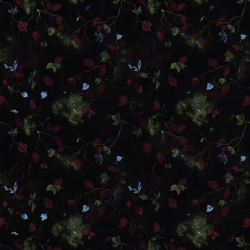
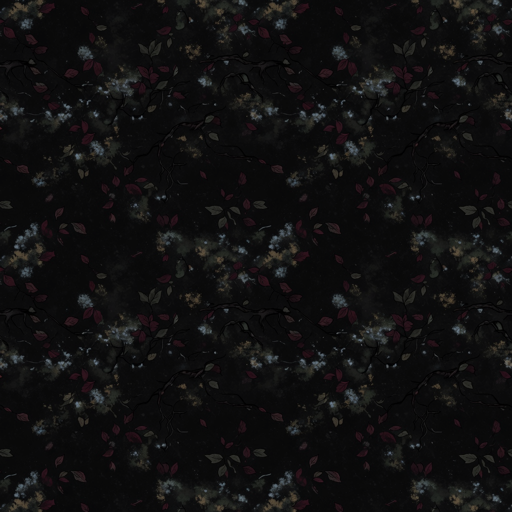
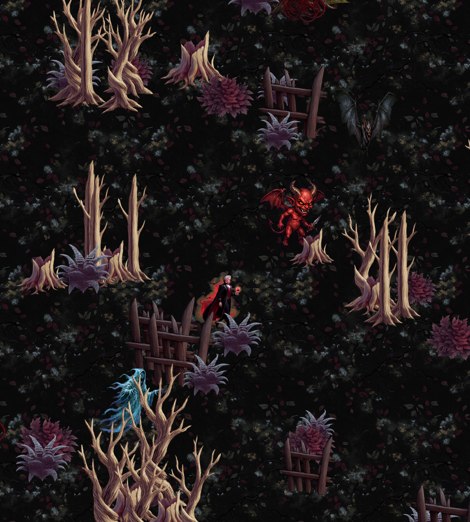
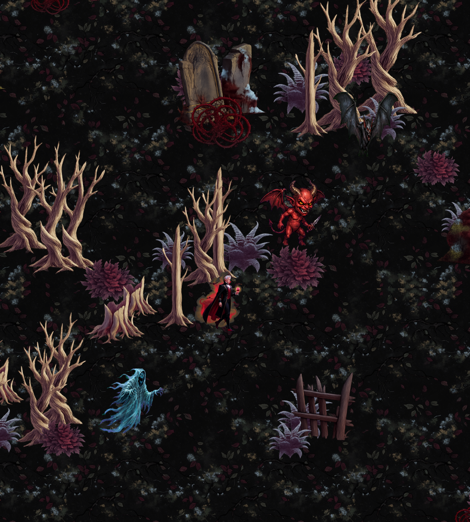

① 地面再壓暗
v2 → v3
建議採用 v3

v2：上一輪確認的版本

v3：重生成＋降彩度後製
- 做了什麼
- prompt 改成「近乎全黑、只有遠處月光」重生成，再把彩度壓到 55%——那些彩色小葉片是最像可撿寶石的東西
要老實講：v3 的平均亮度跟 v2 幾乎一樣（16.3 vs 16.0），變的是對比。亮部從 18.9 降到 14.6，最亮那一段（亮於 120）從 0.60% 掉到 0.06%——也就是「會跳出來搶眼的東西」少了十倍。所以感覺更黑，但角色與敵人的可辨識度沒有被犧牲，因為底色本來就已經在極暗區間了。單純再把整張壓暗只會讓角色跟著糊掉。
② 群聚：先加變體，再改擺放
新增六款變體
可用
- 為什麼要加
- 「一叢一叢」的關鍵不只是擺放演算法。一叢五棵如果是同一張圖複製五次，看起來只會像貼圖 bug。所以每一類至少要三款不同的個體
- 內容
- 三棵樹幹形狀明顯不同的枯樹 ＋ 灌木 ＋ 蕨叢 ＋ 樹樁（後三者當地被，鋪在樹叢腳邊）
擺放結果

seed 3

seed 11
- 放的是
- 真的伯爵走路幀、小惡魔、幽靈、蝙蝠，照遊戲真正的比例（視野半寬 3.25 單位、角色高 0.9 單位）
群聚邏輯（要移植進 Unity 的就是這一套）
- 先散佈叢心：彼此至少隔 1.9 世界單位，避免兩叢黏成一坨。
- 一叢固定同一類：樹叢就整叢是樹、墓園殘骸就整叢是碑與斷柱。混在一起會變成雜物堆，讀不出「一片森林」。
- 主體在內圈、地被在外圈：一叢 6–9 件，前半是樹（高斯分佈、集中），後半是灌木蕨樹樁（散得更開）。這一層是「有層次」的來源，只有樹會很空。
- 每一類有自己的高度範圍：樹 1.4–2.1 單位、地被 0.45–0.85。第一版沒分開，灌木被放大到樹的尺寸，整片畫面被巨大的怪東西蓋住。
- Y 座標壓扁 0.55：一叢沿著地面橫向散開，而不是散成正圓——正圓會看起來像從正上方看，跟裝飾物的傾斜視角打架。
- 依 Y 排序繪製，角色也在同一個排序佇列裡，所以會走到樹後面去。
兩件要你決定的事
- 「形成阻擋」是視覺上的，還是真的會擋住移動？目前做的是視覺上的成片感（不影響走位）。如果要真的碰撞阻擋，那是遊戲性的改動——這是彈幕生存遊戲，走位是唯一的防禦手段，被樹卡住通常等於死，而且敵人也要跟著處理繞路，不然會穿樹而過。我的建議是維持視覺阻擋，但你說了算。
- 密度：模擬圖是「看得出是森林」的密度。實戰時同屏最多 260 隻敵人，這個密度可能會擋住腳下的敵人與掉落物。我會把密度做成參數，預設比模擬圖再稀一點，接上去之後用實機截圖再調一輪。
花費
這一輪 2 張 Grok 生圖（地面 v3、群聚變體）＋ 1 次 OpenAI 去背，約 $0.4；場地素材累計約 $1.6。沒有遇到 Grok 額度不足。素材仍全在暫存路徑，沒有動到 Assets/。